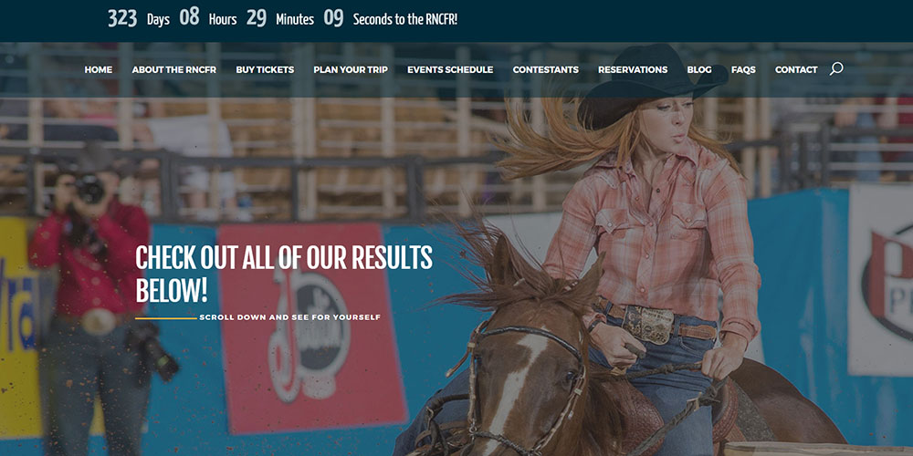
It's Just Reach-Design/Development for Customer
WordPress Web Development of the Results page for the Ram National Circuit Finals Rodeo Website
The design was meant to attract people to the page by using captivating images of the live performance and visually appealing colors and fonts.
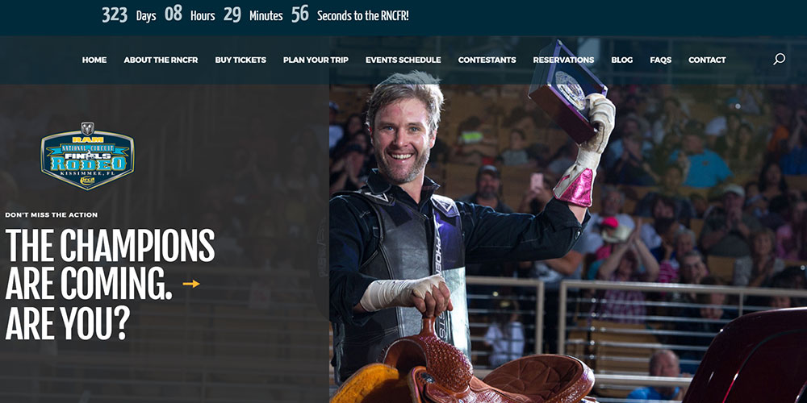
It's Just Reach-Design/Development for Customer
WordPress Web Development of the Home page for the Ram National Circuit Finals Rodeo Website
The design was meant to attract people to the page by using captivating images of the live performance and visually appealing colors and fonts.
The Home page also included videos that I edited using Adobe Premiere.
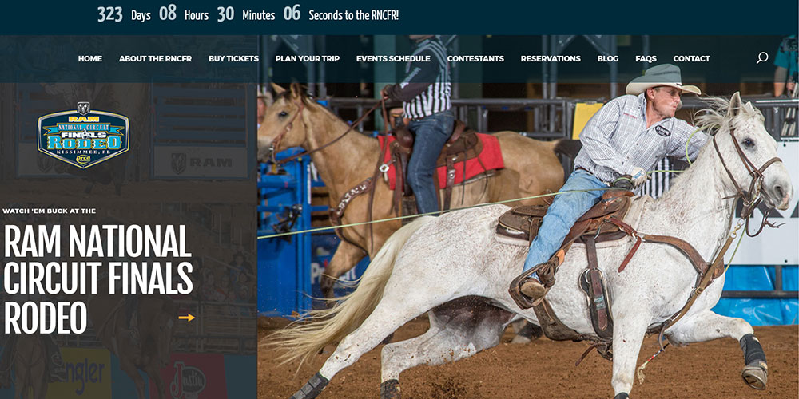
It's Just Reach-Design/Development for Customer
WordPress Web Development of the Home page for the Ram National Circuit Finals Rodeo Website
The design was meant to attract people to the page by using captivating images of the live performance and visually appealing colors and fonts.
The Home page also included videos that I edited using Adobe Premiere.
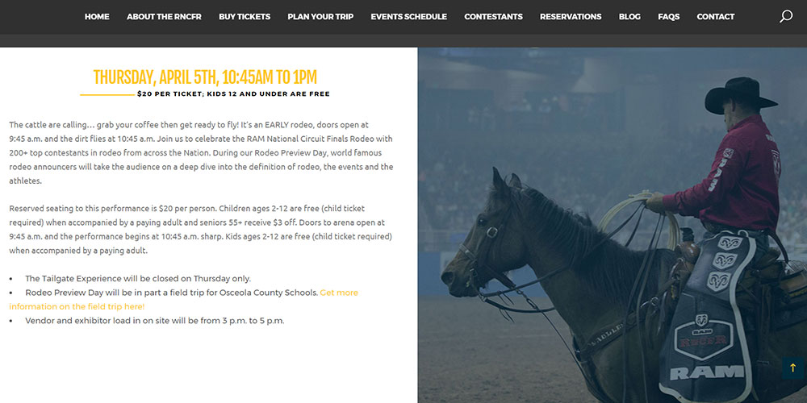
It's Just Reach-Design/Development for Customer
WordPress Web Development of the Events page for the Ram National Circuit Finals Rodeo Website
Live performance images were edited using Photoshop. Added color with low opacity to make the images more attractive for the page and the text that went with them.
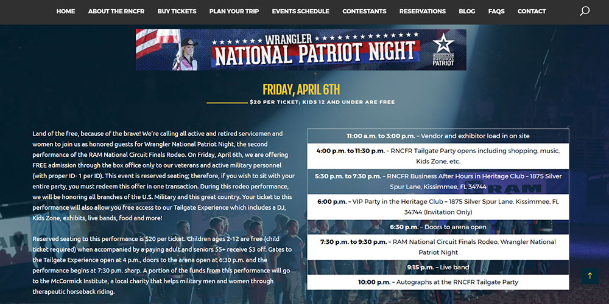
It's Just Reach-Design/Development for Customer
WordPress Web Development of the Events page for the Ram National Circuit Finals Rodeo Website
Live performance images were edited using Photoshop. Added color with low opacity to make the images more attractive for the page and the text that went with them.
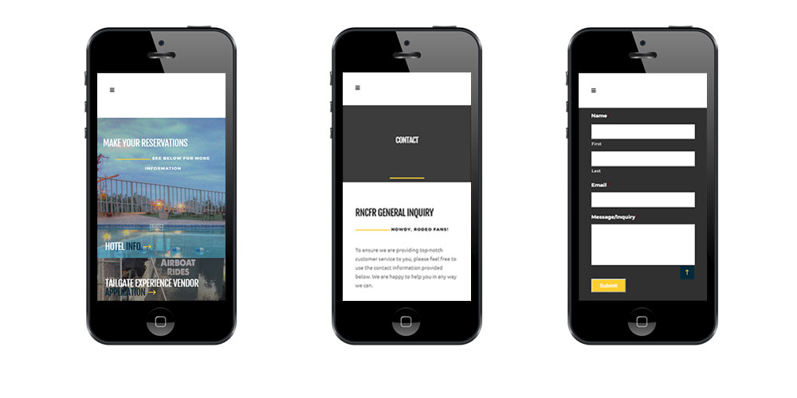
It's Just Reach-Design/Development for Customer
Mobile view of some of the pages of the Ram National Circuit Final Rodeo website redesign. Designed having the User Experience in mind at all times.
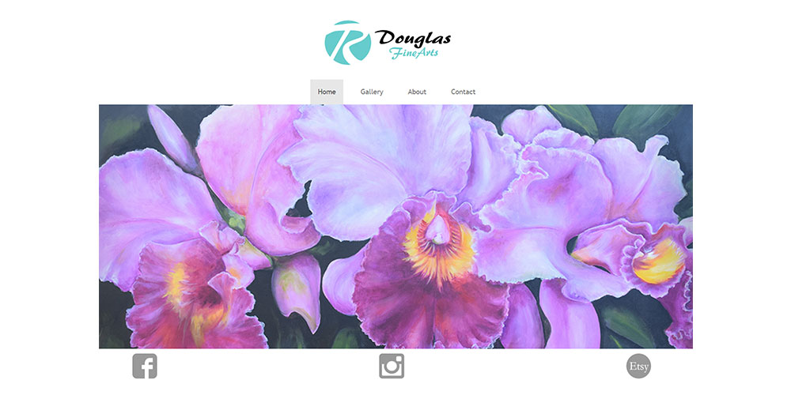
Douglas Fine Arts-Website Design
Complete website design using Bootstrap for an artist's website.
This website was made mainly to display the art that Douglas creates and for people to contact him through it.
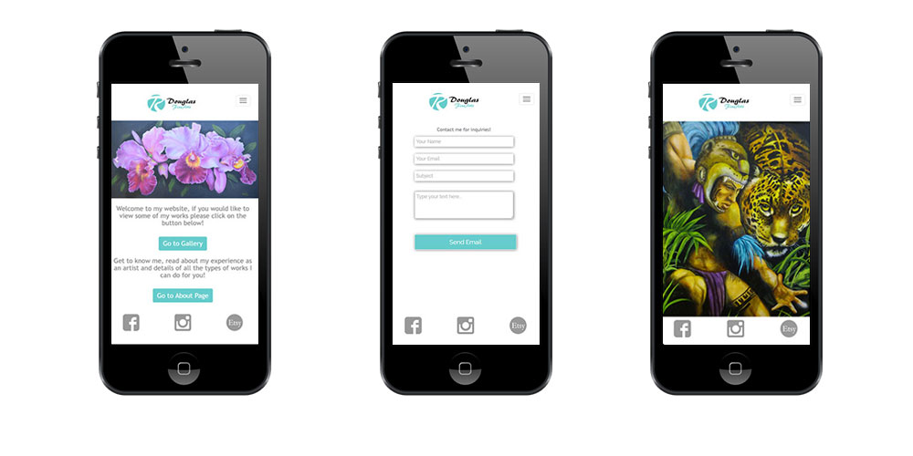
Douglas Fine Arts-Website Design
Mobile View
Complete website design using Bootstrap for an artist's website.
This website was made mainly to display the art that Douglas creates and for people to contact him through it.
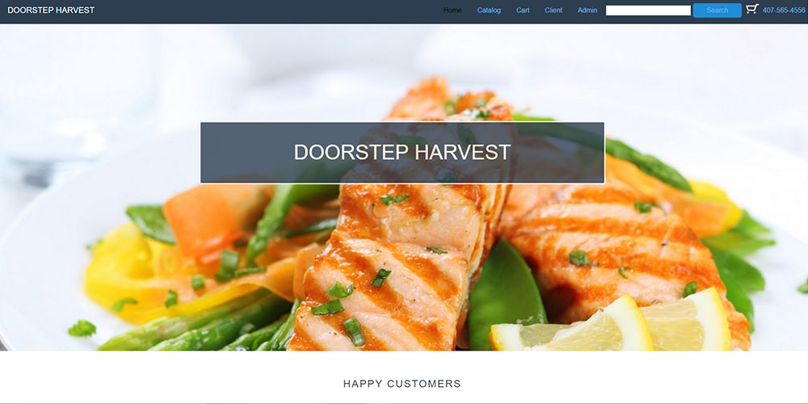
School Project-eCommerce Website
Complete website design of an eCommerce store
I used PureCSS Frameworks to design the mutiple pages
and make them all responsive quickly.
The website was fully functional integrating PHP code that connected it to a database which had all the products and login information that the user would need to manage the website.
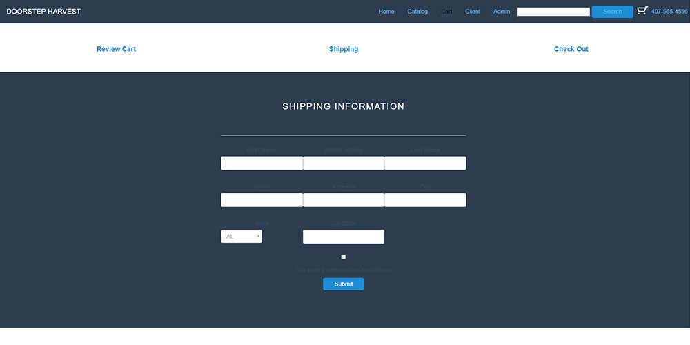
School Project-eCommerce Website
Complete website design of an eCommerce store
I used PureCSS Frameworks to design the mutiple pages
and make them all responsive quickly.
The website was fully functional integrating PHP code that connected it to a database which had all the products and login information that the user would need to manage the website.
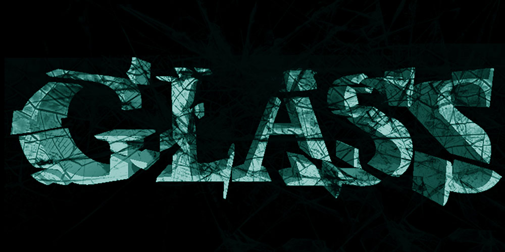
Jhonnatan Romero-Glass Logo
School Project using Photoshop to create a logo of a word.
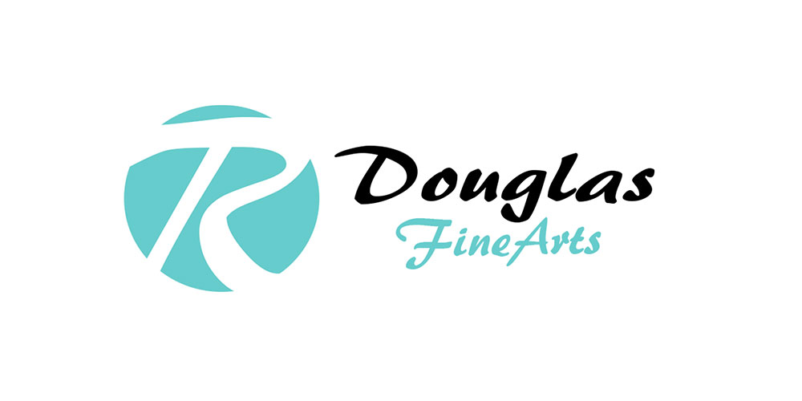
Douglas Fine Arts-Logo
Created a logo for Douglas Fine Arts' Brand
Jhonnatan Romero-Logo
Created a logo for a website portfolio using Photoshop.
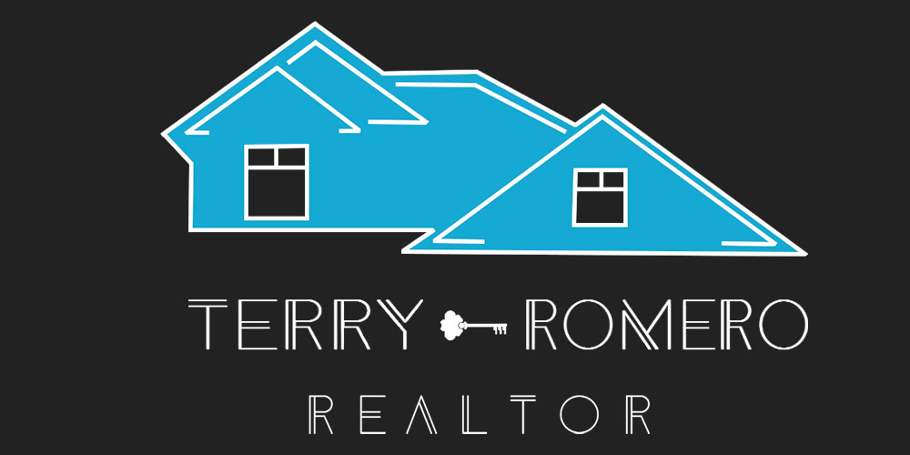
Terry Romero Realtor-Logo
Created a logo for Terry Romero Realtor's brand.
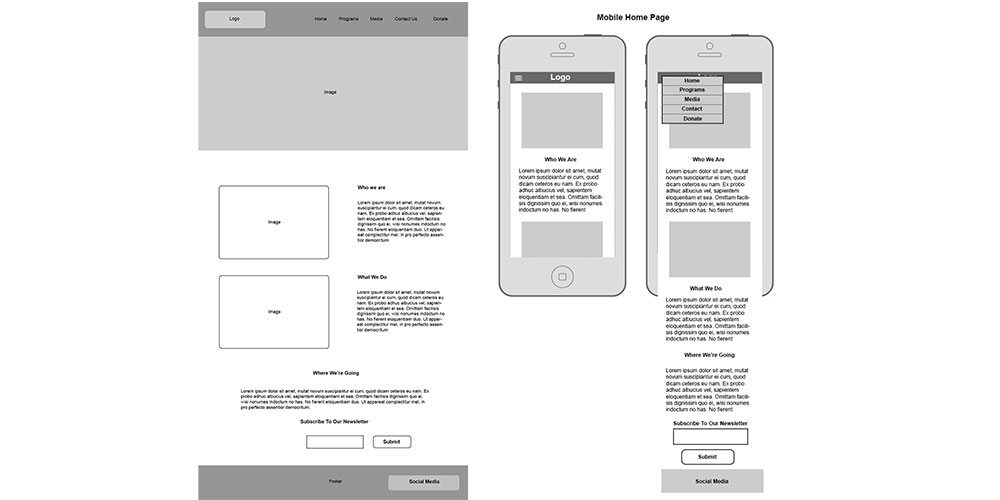
School Project-Desktop and Mobile Wireframes
Used Photoshop to create these Wireframes
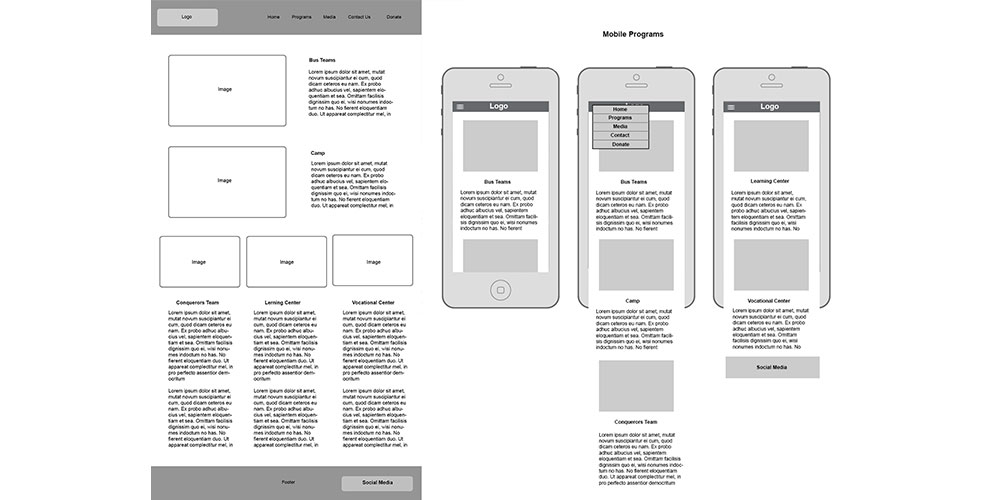
School Project-Desktop and Mobile Wireframes
Used Photoshop to create these Wireframes
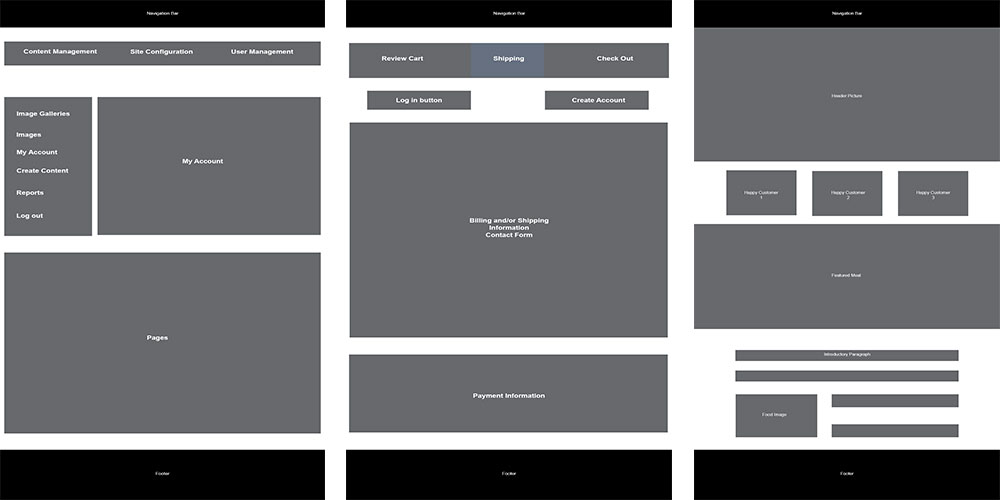
School Project-Desktop Wireframes
Used Photoshop to create these Wireframes